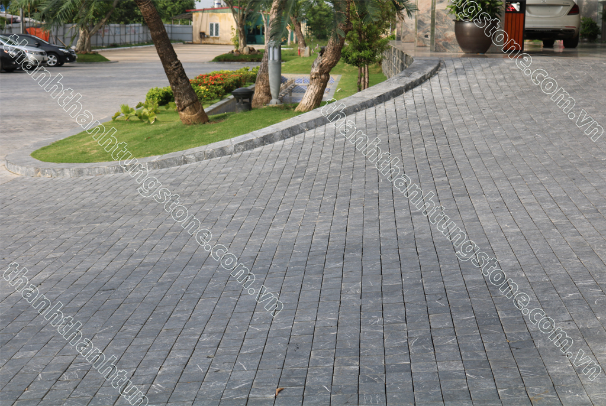
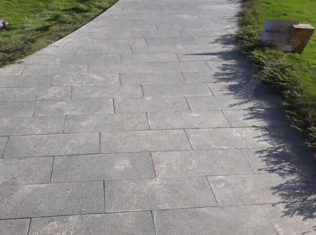
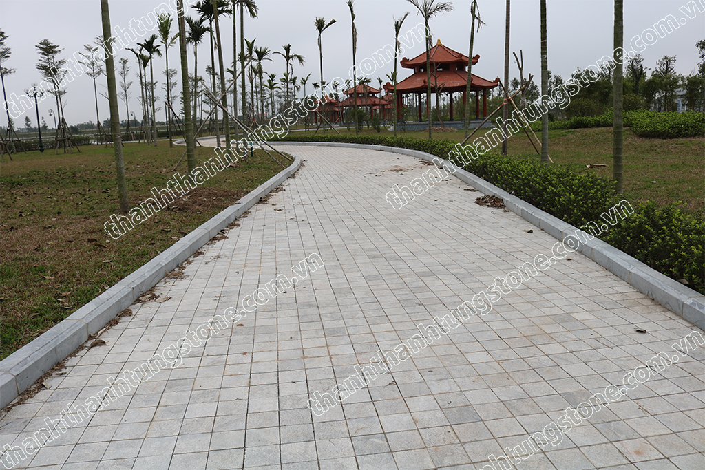
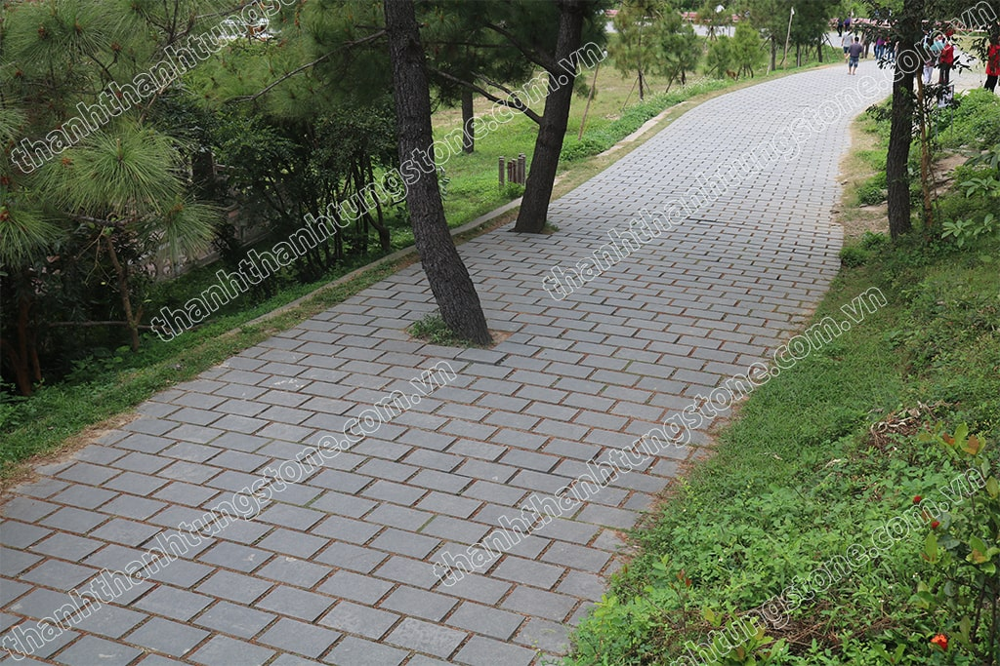
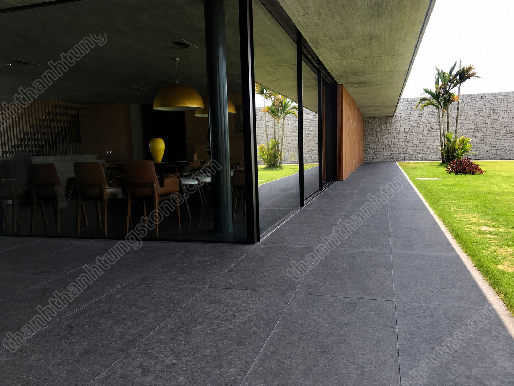
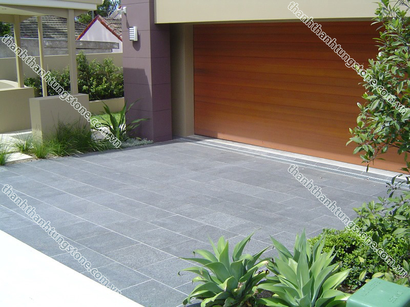
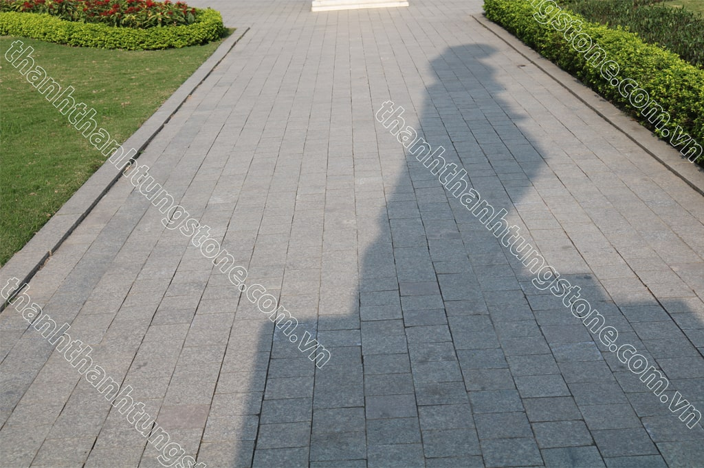
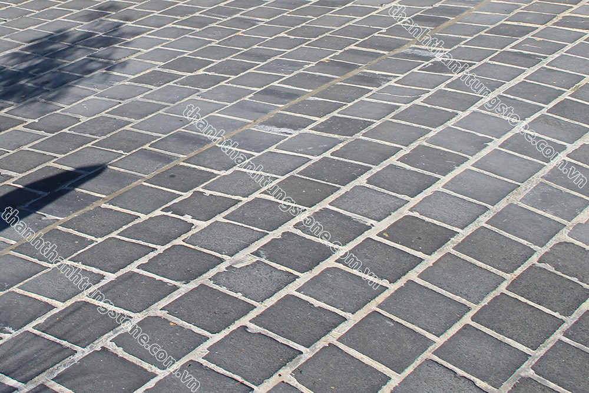
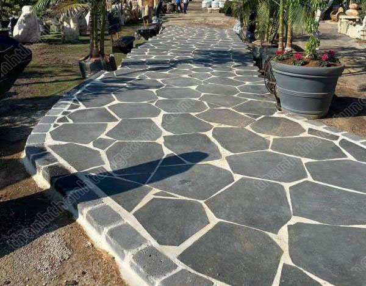

🏡 Nên Dùng Đá Bazan Hay Đá Cubic Lát Sân Vườn? So Sánh Chi Tiết Để Chọn Đúng Loại Phù Hợp
Khi thiết kế sân vườn, việc lựa chọn vật liệu lát nền không chỉ ảnh hưởng đến tính thẩm mỹ mà còn quyết định độ bền, khả năng chống trơn trượt và chi phí sử dụng lâu dài. Trong số các loại đá tự nhiên đang được ưa chuộng hiện nay, đá bazan và đá cubic là hai cái tên thường xuyên được nhắc đến.
Cả hai đều sở hữu nhiều ưu điểm nổi bật và được ứng dụng rộng rãi trong các công trình biệt thự, resort, công viên và sân vườn gia đình. Tuy nhiên, mỗi loại đá lại phù hợp với những nhu cầu khác nhau. Nếu bạn đang phân vân giữa đá bazan và đá cubic, bài viết dưới đây sẽ giúp bạn có cái nhìn rõ ràng hơn.

🪨 Đá Bazan Là Gì?
Đá bazan là loại đá tự nhiên được hình thành từ quá trình nguội đi của dung nham núi lửa. Nhờ kết cấu đặc chắc, đá bazan có độ cứng cao và khả năng chịu lực rất tốt.
Trong các công trình sân vườn, đá bazan thường được gia công bề mặt khò lửa hoặc băm mặt để tăng độ ma sát. Màu sắc phổ biến của đá là đen hoặc xám đen, tạo cảm giác hiện đại, mạnh mẽ và sang trọng.
Ngày nay, nhiều khu nghỉ dưỡng cao cấp và biệt thự hiện đại lựa chọn đá bazan bởi vẻ đẹp tối giản nhưng đầy tinh tế.

🌿 Đá Cubic Là Gì?
Đá cubic là những viên đá tự nhiên được cắt thành dạng khối vuông hoặc chữ nhật nhỏ. Loại đá này có thể được sản xuất từ đá bazan, đá xanh đen hoặc đá granite.
Khác với đá tấm truyền thống, đá cubic mang lại sự linh hoạt trong thiết kế. Các viên đá nhỏ có thể được sắp xếp thành nhiều kiểu lát khác nhau như hình quạt, xương cá, ziczac hoặc các họa tiết nghệ thuật độc đáo.
Chính nhờ khả năng sáng tạo cao trong thi công mà đá cubic được sử dụng rộng rãi trong cảnh quan sân vườn, quảng trường và các khu phố đi bộ.

📊 Bảng So Sánh Đá Bazan Và Đá Cubic
| Tiêu chí | Đá Bazan | Đá Cubic |
|---|---|---|
| 🎨 Tính thẩm mỹ | Hiện đại, tối giản, sang trọng | Cổ điển, nghệ thuật, đa dạng kiểu lát |
| 🏡 Phong cách phù hợp | Biệt thự hiện đại, resort | Sân vườn châu Âu, cảnh quan nghệ thuật |
| 💪 Độ bền | Rất cao | Rất cao |
| 🌧️ Khả năng chống trơn | Rất tốt | Tốt |
| 🔧 Bảo dưỡng | Dễ dàng | Dễ dàng |
| ⏳ Tuổi thọ | Hàng chục năm | Hàng chục năm |
| 👷 Thi công | Nhanh hơn | Tốn nhiều công hơn |
| 💰 Chi phí nhân công | Thấp hơn | Cao hơn |
| ✨ Tính sáng tạo trong thiết kế | Trung bình | Rất cao |
Nhìn chung, cả hai loại đá đều có độ bền tốt, tuy nhiên sự khác biệt lớn nhất nằm ở phong cách thẩm mỹ và phương pháp thi công.

🔥 Khi Nào Nên Chọn Đá Bazan?
Nếu bạn yêu thích những không gian hiện đại, gọn gàng và sang trọng thì đá bazan là lựa chọn rất đáng cân nhắc.
Những tấm đá lớn tạo cảm giác liền mạch cho mặt sân, giúp không gian trông rộng rãi và cao cấp hơn. Bề mặt khò lửa cũng mang lại khả năng chống trơn trượt hiệu quả, đặc biệt phù hợp với điều kiện thời tiết nóng ẩm và mưa nhiều tại Việt Nam.

Ngoài ra, đá bazan thường có màu sắc trung tính nên rất dễ kết hợp với cây xanh, hồ cá, tiểu cảnh hoặc kiến trúc hiện đại.
Đá bazan phù hợp với:
- ✅ Sân vườn biệt thự hiện đại
- ✅ Hồ bơi và khu nghỉ dưỡng
- ✅ Lối đi ngoài trời
- ✅ Quảng trường và công viên

🧱 Khi Nào Nên Chọn Đá Cubic?
Nếu bạn muốn sân vườn có điểm nhấn độc đáo và mang phong cách riêng, đá cubic sẽ là lựa chọn thú vị hơn.
Nhờ kích thước nhỏ, đá cubic cho phép tạo ra nhiều kiểu lát khác nhau. Đây là ưu điểm mà đá tấm khó có thể đáp ứng được.

Một lối đi lát đá cubic theo kiểu xương cá hoặc hình quạt có thể tạo nên nét cuốn hút đặc biệt cho toàn bộ khu vườn. Chính vì vậy, đá cubic thường xuất hiện trong các khu biệt thự sân vườn, khu nghỉ dưỡng phong cách châu Âu hoặc các công trình cảnh quan cao cấp.
Đá cubic phù hợp với:
- ✅ Sân vườn phong cách châu Âu
- ✅ Khuôn viên biệt thự
- ✅ Phố đi bộ
- ✅ Quảng trường
- ✅ Lối đi cảnh quan nghệ thuật

💰 Loại Nào Tiết Kiệm Hơn?
Nhiều người cho rằng đá cubic luôn đắt hơn đá bazan nhưng thực tế không hoàn toàn như vậy.
Chi phí vật liệu giữa hai loại có thể không chênh lệch quá lớn. Tuy nhiên, đá cubic thường tốn nhiều thời gian và công sức thi công hơn do phải sắp xếp từng viên đá theo đúng thiết kế.
Ngược lại, đá bazan dạng tấm có thể thi công nhanh hơn, giúp tiết kiệm chi phí nhân công và rút ngắn thời gian hoàn thiện công trình.
Đối với những sân vườn diện tích lớn, đây là yếu tố đáng cân nhắc.

🎯 Vậy Nên Chọn Đá Bazan Hay Đá Cubic?
Câu trả lời phụ thuộc vào phong cách mà bạn mong muốn cho sân vườn của mình.
👉 Nếu ưu tiên sự hiện đại, độ bền cao, thi công nhanh và khả năng chống trơn tốt, đá bazan là lựa chọn hợp lý.
👉 Nếu yêu thích sự sáng tạo, các kiểu lát độc đáo và muốn tạo điểm nhấn nghệ thuật cho cảnh quan, đá cubic sẽ phù hợp hơn.
Trên thực tế, nhiều công trình còn kết hợp cả hai loại đá để tận dụng ưu điểm của từng vật liệu. Ví dụ, sử dụng đá bazan cho khu vực chính và đá cubic để tạo điểm nhấn cho lối đi hoặc tiểu cảnh.

📌 Kết Luận
Đá bazan và đá cubic đều là những vật liệu lát sân vườn chất lượng cao, có độ bền vượt trội và khả năng thích nghi tốt với điều kiện thời tiết ngoài trời. Việc lựa chọn loại nào không phụ thuộc vào việc loại đá nào tốt hơn, mà phụ thuộc vào phong cách thiết kế, ngân sách và nhu cầu sử dụng của từng công trình.
Một sân vườn đẹp không nằm ở việc sử dụng vật liệu đắt tiền nhất mà nằm ở sự hài hòa giữa kiến trúc, cảnh quan và vật liệu được lựa chọn.
📞 Hotline: 097 929 8888
🌐 Website: https://thanhthanhtungstone.com